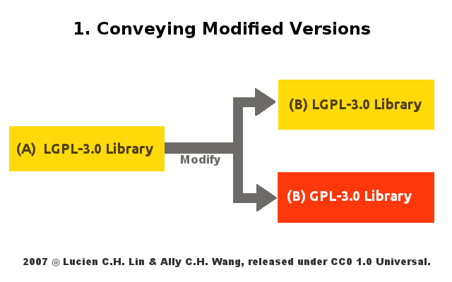
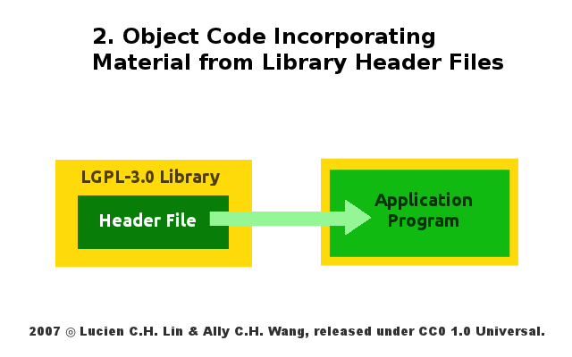
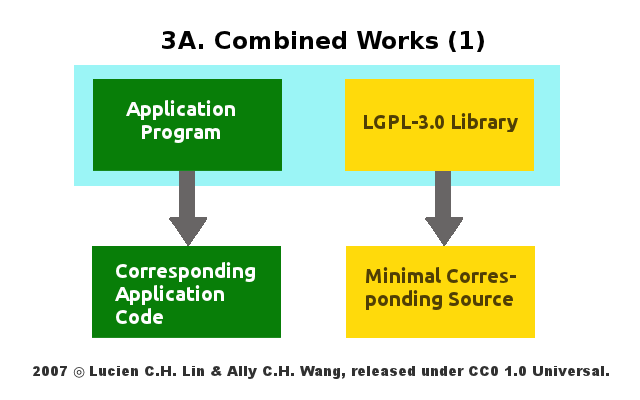
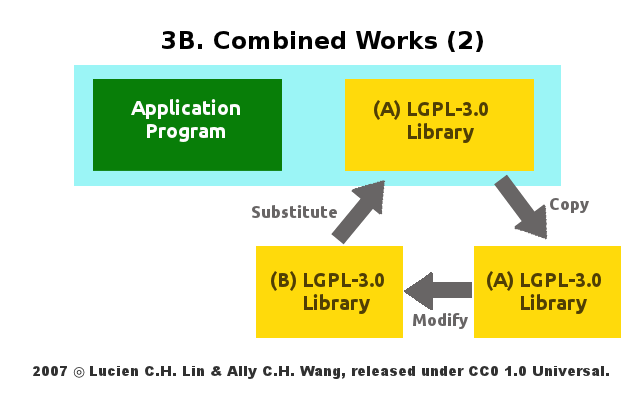
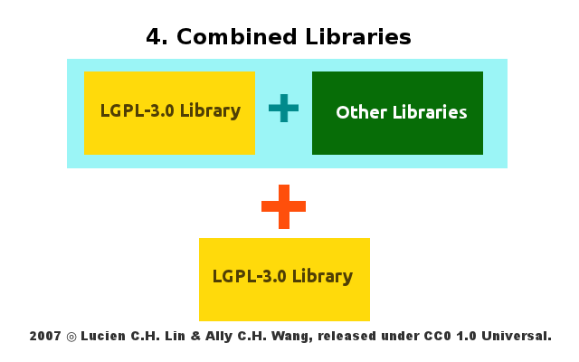

感謝您對「自由軟體鑄造場」的支持與愛護，十多年來「自由軟體鑄造場」受中央研究院支持，並在資訊科學研究所以及資訊科技創新研究中心執行，現已完成階段性的任務。 原網站預計持續維運至 2021年底，網站內容基本上不會再更動。本網站由 Denny Huang 備份封存。
也紀念我們永遠的朋友 李士傑先生（Shih-Chieh Ilya Li）。
也紀念我們永遠的朋友 李士傑先生（Shih-Chieh Ilya Li）。
更為彈性中庸的 LGPL-3.0
建立日期 2007-08-27 04:41 最近更新在 2012-05-14 13:07
經歷了約一年半開放式網路論壇的意見討論，LGPL-3.0（註一）亦隨著 GPL-3.0 於 2007 年 6 月 29 日同天定稿，其基本的修正趨勢可大分為兩點，第一就是在函式庫程式 (library) 的應用方面更添彈性，LGPL-3.0 授權條款一方面試圖微調外擴性質的授權拘束性（註二），卻也同時拓深了所轄函式庫可能的散布管道；第二是將函式庫的實際運行法則案例化，舉凡 LGPL-3.0 條款第 3 條至第 6 條，都可說是實際案例的個別說明條款，一般來說、LGPL-3.0 的重大修改有下列幾點：1、代位副首、成為 GPL-3.0 的附加條款：
LGPL 條款之於 GPL 而言，一直處於代位副首的地位，其存在意義在於提供一個與 GPL 相較，在授權拘束性方面較為寬鬆的自由軟體授權條款，以避免多數使用者迴避使用拘束性過於嚴苛的 GPL 函式庫，但無論如何、從自由軟體基金會 (Free Software Foundation FSF) 的立場出發，其仍然認為 GPL 才是達致普世軟體自由 (Software Freedom) 的最佳利器，而 LGPL 則是因應現實所不得不做出的讓步，是以新版 LGPL-3.0 試圖貫徹這樣的理念，其以 GPL-3.0 的條款內容為本、將 LGPL-3.0 的其餘條文做為 GPL-3.0 的附加修正條款，在這樣的配置之下、LGPL-3.0 的實際內容等於 GPL-3.0 本文加上 LGPL-3.0 本文，才是完整的 LGPL-3.0 授權全文。更進一步來說、GPL-3.0 與 LGPL-3.0 之間仍延續 2 版時期的「轉換關係」，以 LGPL-3.0 授權的函式庫為例，其可以被任一散布者改以 GPL-3.0 的方式接續散布，再者、如修改、改作之後的作品，不再具有函式庫的運作性質，則此改作成品後續更是只能轉以 GPL-3.0 為其再散布時的授權條款（註三），此授權轉換的過程如同 2 版時期，依舊不可逆轉，亦即、程式從 LGPL-3.0 轉換為 GPL-3.0 為一條單向道，並沒有任何程式可以由 GPL-3.0 轉回適用 LGPL-3.0 為其授權條款。
2、重建壁壘、進一步述明 LGPL-3.0 的授權擴散範圍：
若用最大特徵來對 GPL 與 LGPL 的不同點進行表述，可說即為兩者適用的客體有所不同，GPL 可適用於各種類型的軟體程式，但 LGPL 的客體則必須為一提供數據、資料，供其他程式呼叫存取來產生作用的軟體函式庫，這樣的不同點造成了 GPL 與 LGPL 在授權拘束性原則上的差異，一般對於 GPL 的解釋、若其他程式與 GPL 函式庫產生必然的連結與利用關係，則原則上此連結程式，便可能會被解讀為該 GPL 函式庫的衍生著作，而在後續散布上須一體適用 GPL 授權條款，進而被要求一併提供該程式的程式原始碼。但 LGPL 在授權拘束性上，卻創建了原則與例外不等的運行法則，這些原則與例外的判準、在第 3 版的 LGPL 裡更為彰顯。LGPL-3.0 重新釐清了諸如「應用程式 (Application)」、「LGPL-3.0 函式庫本體 (Linked Version)」及「系統函式庫 (System Library)」的指涉範圍，利用這些重新定義的名詞來構築 LGPL-3.0 授權拘束性的擴散範疇，而就整體觀察而言、LGPL-3.0 較之 2 版確實放寬了許多的限制，例如將一般應用程式與 LGPL-3.0 函式庫結合為一新軟體專案來運作，只要程式與函式庫之間不具必然的依賴關係，並且兩者呼叫與對應之間的程序與介面也清楚的話，此結合作品便未必會受到 LGPL-3.0 全面的授權拘束。
3、明示使用、重製推銷 LGPL-3.0 函式庫：
相對於重新介定 LGPL-3.0 授權函式庫的拘束性範圍之外，LGPL-3.0 進一步加上了「明示使用」的要求（註四），以及「重製推銷」自身函式庫的廣告策略（註五）。所謂「明示使用」，意指使用者若取用 LGPL-3.0 授權函式庫進行運用，則無論此運用關係是否緊密到專案裡其他的軟體程式亦受到拘束，使用者仍須明示其他程式與 LGPL-3.0 授權函式庫之間的運用關係，此點要求可謂 LGPL-3.0 擴張聲譽及普及率的手段，因為加上此款「明示義務」，日後使用者若取用 LGPL-3.0 函式庫而未公開註解與說明，則已然涉及契約義務的違反，進而可能會被指稱有侵權利用的疑慮；而所謂「重製推銷」、則是 LGPL-3.0 在某些使用者毋須開放己身應用程式原始碼的情況下，仍會同步要求使用者，應檢附 LGPL-3.0 授權函式庫的原始版本與此專案併行釋出，以擴展 LGPL-3.0 函式庫自身的應用比例，及可能被進一步使用的可能性。
4、個案例示、以類型化的方式述明 LGPL-3.0 的諸般義務性要求：
LGPL-3.0 採用與 LGPL-2.1 頗為不同的條款敘述方式，其授權條款第 3 條至第 6 條本文, 分別述明了 LGPL-3.0 函式庫四種不同的應用模式，以下即以圖例輔助說明之。
(1) Conveying Modified Version：
LGPL-3.0 第 3 條講述的是對於 LGPL-3.0 函式庫本身進行修改，其後所必須遵守的義務性規定，由下圖來看、LGPL-3.0 授權的函式庫 A，經過使用者修改後成為衍生作品 B，此一衍生作品會受到 LGPL-3.0 授權條款的拘束，所以其授權方式可以選擇沿用 LGPL-3.0 或是轉成 GPL-3.0 為其再散布時的授權條款，端視修改者願意盡到何種程度的配合義務。而如果最後的決定是沿用 LGPL-3.0 授權方式的話，LGPL-3.0 進一步要求函式庫 B 的修改者，不可安插僅得由特定「應用程式」呼叫方可運用的功能到函式庫 B 裡，但如果這樣的狀況真的發生了，那麼修改者會被 LGPL-3.0 責付一個進階義務，那就是提供此一獨有功能的細部資訊，供其他使用函式庫 B 的人，也可自行研讀相關資訊後，透過其他應用程式開啟函式庫 B 這個特定功能，而若修改者不願意提供這部份的細部資訊，則 LGPL-3.0 律定、此時經其修改過的函式庫 B，依條款規定便僅能以 GPL-3.0 為其再散布時之授權條款！如此設計的原因，是因為考量到若函式庫 B 的某些功能，須有賴特定應用程式方可進行呼叫，則無異讓具有「自由開放性」的 LGPL-3.0 函式庫，在後續修改、改版上，受到私有應用程式軟體 (proprietary application) 的變相拑制，是以若 LGPL-3.0 函式庫的修改者，不願意提供其應用程式與函式庫呼叫流程的深入資訊，則 FSF 便透過 LGPL-3.0 此一條款，直接透過解釋、來要求函式庫 B 僅能以 GPL-3.0 的方式進行後續釋出，如此一來、因為 GPL-3.0 在授權拘束性方面具有較強的外擴性，則連結運用函式庫 B 的應用程式，亦有可能為 GPL-3.0 授權拘束性範圍所及，最後在散布上、也就會被視為一體，而必須適用 GPL-3.0 授權條款的方式來提供程式原始碼，以 FSF 的立場來看、其便毋庸擔心函式庫的未來發展，受到私有應用程式隱性的拑制。

▲ 圖1 LGPL-3.0：散布衍生作品時的授權承繼與授權轉換關係示意圖
(2) Object Code Incorporating Material from Library Header Files：
LGPL-3.0 第 4 條，主要是規範應用程式截取部份 LGPL-3.0 函式庫程式碼的情形，於此條文中可知、LGPL-2.1 時期「微量使用」的概念仍然受到尊重，亦即如應用程式取用並嵌入 LGPL-3.0 函式庫程式碼的範圍，控制在「數字參數、資料結構層級及資料結構存取機制，或是小巨集與一些內嵌的必要程式碼（10 行以內）」，則此等程式碼的微量取用關係，並不會致使應用程式的目的碼受到 LGPL-3.0 授權拘束性的限制，但如取用程式逾越上述範圍，但亦可證明取用的程式碼乃來自於 LGPL-3.0 函式庫之標頭檔 (header file) 時，則此應用程式的編寫者仍可依己意選擇應用程式的授權條款，但前提是散布者亦須符合 LGPL-3.0「明示使用」的義務性要求，也就是說、於應用程式散布時須明示此一程式乃奠基於 LGPL-3.0 函式庫的基礎進行運作，並於散布時提供 LGPL-3.0 授權條款全文供後手閱覽（包括 GPL-3.0 本文及 LGPL-3.0 本文），是以下圖以草綠顏色表彰，若是微量取用 LGPL-3.0 授權程式碼，或是取用的部份來自 LGPL-3.0 函式庫之標頭檔，此時應用程式不必然會受到 LGPL-3.0 授權方式所拘束，但亦於外框以 LGPL-3.0 的黃色圖示表現，以註記散布者亦有相對應的「明示使用」義務須向後手述明。

▲ 圖2 LGPL-3.0：微量取用與匯入檔頭資訊的除外關係示意圖
(3) Combined Works：
將「私有的應用程式」與「LGPL-3.0 函式庫」結合為一「組合作品」，乃是 LGPL-3.0 義務性規定運作最為繁複的結合型態，而此型態、亦是 LGPL-2.1 與 LGPL-3.0 最大的分野所在，按 LGPL-2.1 的原始設定，僅簡要交待若是將應用程式與 LGPL-2.1 函式庫結合為一個「可執行檔案／專案 (the executable)」進行運作，則此可「執行檔案／專案」便會被認定為 LGPL-2.1 函式庫的衍生著作，而受到 LGPL-2.1 授權拘束性的限制 (linking a “work that uses the Library” with the Library creates an executable that is a derivative of the Library)，但如何定義哪種類型的結合方式是屬於「可執行檔案／專案」的結合方式，則並沒有很清楚的被描述。所以 LGPL-3.0 就此議題進行補足，也就是說、使用者將應用程式與 LGPL-3.0 函式庫結合運用，只要組合者清楚交待應用程式與函式庫之間的呼叫方式與互動流程，此一「組合作品」仍有機會依結合者的意願選用他種授權條款！但要注意的是，這樣的情況、結合者仍須踐履 LGPL-3.0 其他附加的義務性要求。
以下圖來說、其表彰的即為「組合作品」中一種義務性要求的踐履方式，首先 LGPL-3.0 將「組合作品」中原以 LGPL-3.0 授權的函式庫原始碼，稱為「最低限度對應原始碼 (Minimal Corresponding Source)」，「組合作品」的散布者必須連帶將這部份的程式原始碼，一併散布予收受「組合作品」的後手；再者、即為「應用程式對應碼 (Corresponding Application Code)」的供給，此一「應用程式對應碼」未必為原始碼格式，多數情況下可能僅以目的碼的形式來表現，那麼究竟「應用程式對應碼」的指稱範疇為何？其實、其指的便是應用程式與函式庫之間「產生連結、進行呼叫、資訊提供與數據反饋」的相關流程與資料，依此等資料、收受「組合作品」的後手可以據其重建應用程式與改版後 LGPL-3.0 函式庫之間的連結關係，不致使得 LGPL-3.0 函式庫經過修改與調整後，原先的組合作品即無法正常運作。

▲ 圖3 LGPL-3.0：組合作品提供「應用程式對應碼」示意圖
而倘若「組合作品」的組合者不願依前述的方式提供「應用程式對應碼」的話，則 LGPL-3.0 就「組合作品」，提出的另一個抽象但具有彈性解釋空間的替代方案為：編寫出一套「適宜的函式庫共享機制 (Suitable Shared Library Mechanism for Linking with the Library) 供後手使用。所謂「適宜的函式庫共享機制」，可參照下圖的簡要說明，第一、「組合作品」執行時，此機制會自動拷貝一份 LGPL-3.0 授權的函式庫 A，至使用者的電腦裡進行運作；第二、若嗣後函式庫 A 經過修改，衍生出新版本的函式庫 B 時，此時「適宜的函式庫共享機制」仍然可以讓「組合程式」的使用者，以函式庫 B 代換掉函式庫 A，而整個「組合程式」仍然可以順暢執行且運作無礙，如能達到前述二項要求，那麼此一 LGPL-3.0 函式庫組合者的組合行為，亦算是符合 LGPL-3.0 預設的義務性要求。

▲ 圖4 LGPL-3.0：組合作品適宜之「函式庫共享機制」示意圖
(4) Combined Libraries：
最後一種 LGPL-3.0 函式庫的利用態樣，乃是函式庫與函式庫的結合運用。因為函式庫本身即為一種慣常為其他程式取用數據與資料的軟體，故數個函式庫併合運作亦屬事理之常，LGPL-3.0 特別敘明此種態樣時使用者所須踐履的義務性規定，簡單來說、其仍是奠基於「明示使用」與「重製推銷」兩個大原則之下，首先、散布此「組合函式庫」之人，必須併行散布組合函式庫裡未經摻雜的 LGPL-3.0 函式庫，其次、提供相關資訊，供收受組合函式庫的後手，能取得未組合前 LGPL-3.0 函式庫完整的原始版本。

▲ 圖5 LGPL-3.0：函式庫合併散布方式示意圖
綜上所述、LGPL 從 2 版到 3 版的改版總評，一言以括之、可說是更為「彈性而中庸」，彈性的部份、可以從函式庫運用方式的類型化來看，LGPL-3.0 較之 LGPL-2.0，補充說明了許多過往描述不足的部份，其類型化的解釋方式，增加了不少其他應用程式取用 LGPL-3.0 函式庫的配置空間，而就中庸部份而言，LGPL-3.0 並沒有拘執於將授權拘束性的解釋範圍加大，與之相對的、則是擴增了許多 2 版所沒有的附加性義務條款，來取得專案推廣上知名度的平衡，最為顯著的就是普遍狀況下，散布者須彰明散布專案與 LGPL-3.0 函式庫之間的利用關係，並隨之添附 LGPL-3.0 授權條款全文供後手閱覽，有時甚至必須提供 LGPL-3.0 專案的原始資訊，讓後續函式庫的使用者能夠了解並據以接觸原專案。是以 LGPL 從 2 版至 3 版、一方面就授權拘束性的範圍，透過類型化的方式解釋的更為清楚，一方面也同步拓深了授權條款及原始碼本身被推廣散布的可能性，此即為 LGPL-3.0 於 2007 年完成的改版趨勢。
註一：GNU Lesser General Public License v3.0，英文原文內容：https://www.gnu.org/licenses/lgpl-3.0.html。
註二：關於 GNU 系列條款所蘊含的授權外擴性與拘束性機制，請參照，林誠夏，GPL 條款對於衍生程式的判定標準與其授權拘束性的擴散範圍（上），https://www.openfoundry.org/tw/legal-column-list/8446-the-license-inheritance-bounds-of-gnu-gpl-01，自由軟體鑄造場電子報，第 181 期；GPL 條款對於衍生程式的判定標準與其授權拘束性的擴散範圍（下），https://www.openfoundry.org/tw/legal-column-list/8447-the-license-inheritance-bounds-of-gnu-gpl-02，自由軟體鑄造場電子報，第 183 期。
註三：LGPL-3.0 授權條款第 2 條 第 1 項 b 款。
註四：LGPL-3.0 授權條款第 3 條第 1 項、第 4 條第 1 項、第 5 條第 1 項。
註五：LGPL-3.0 授權條款第 4 條第 1 項 d 款之 2，第 5 條第 1 項 a 款。
自由軟體鑄造場 製作 最佳瀏覽狀態：IE7或Firefox2.0以上 (建議使用Firefox) ‧ 解析度1024*768
E-Mail：contact@openfoundry.org Address：台北市南港區研究院路2段128號 中央研究院資訊科學研究所 . 隱私權條款. 使用條款
E-Mail：contact@openfoundry.org Address：台北市南港區研究院路2段128號 中央研究院資訊科學研究所 . 隱私權條款. 使用條款